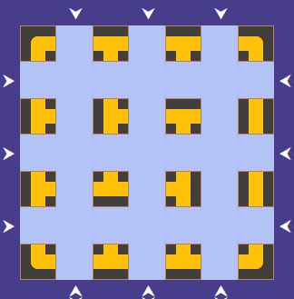
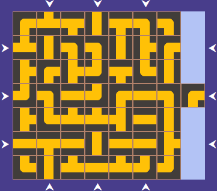
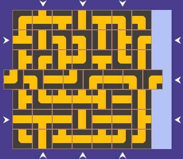
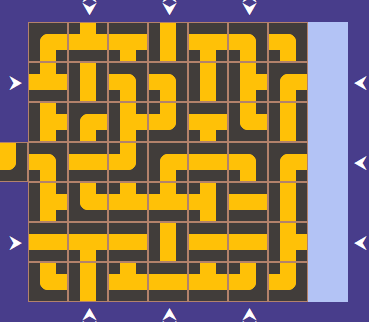

<!DOCTYPE html>
<html lang="en">
<head>
    <meta charset="UTF-8">
    <meta http-equiv="X-UA-Compatible" content="IE=edge">
    <meta name="viewport" content="width=device-width, initial-scale=1.0">
    <title>Varázslatos katakomba</title>
    <link rel="stylesheet" href="css/style.css">
</head>
<body>
    <div id="game"></div>
    <!--<div id="start">
        <label for="inputPlayers">Játékosok száma</label><br>
        <input type="number" name="inputPlayers" id="inputPlayers" value="2" min="1" max="4"><br><br>

        <label for="inputNumberCards">Játékosonként hány kincskártya</label><br>
        <input type="number" name="inputNumberCards" id="inputNumberCards" min="1"><br><br>

        <button id="btnStart">Start</button>
    </div><br>-->

    <!--<canvas width="600" height="400" id="game"></canvas>

    <button id="btnDesc">Játékleírás</button>
    <div id="divDesc">
        <h1>A játék leírása</h1>
        <p>A <b>katakomba</b> szobáit egy 7x7-es négyzetrács cellái jelképezik. Minden szobában adott, hogy hány falán van ajtó. Ha két szomszédos szoba érintkező falán egy-egy ajtó van, akkor át lehet menni egyik szobából a másikba. A négyzetrács páros sorait és oszlopait el lehet tolni, a többi szoba végig rögzített a játék során. Az eltolásokkal az ajtókon keresztül utak nyílnak a szobák között, így lehet eljutni a kincsekhez. Mindegyik kérő arra törekszik, hogy a katakomba szobáinak ötletes eltolásával eljusson a kincsekhez. Aki elsőként találja meg mindahányat és kiindulópontjára sikeresen visszaérkezik az a nyertes.</p>
        <div>
            
            
        </div>
        <i>Megjegyzés: a jobb oldali ábrán és majd a következő két ábrán a jobb oldali világoskék csík "véletlenül" került oda, a plusz elem miatt jelent meg. Ennek megjelenítése nem elvárás, sőt csúnya megoldásnak számít!</i>
        <p>A <b>játék elején</b> a szobákat véletlen sorrendben és véletlen irányban kirakjuk a játéktábla szabad mezőire. A szobák közül az egyik mindenképpen fölösleges marad. A játék folyamán majd mindig az éppen kimaradó szobát használjuk a többi szoba elcsúsztatására. A játékban legfeljebb 24 kincset kell megtalálni. Ezeket véletlen sorrendben felrakjuk a táblára úgy, hogy egy mezőn csak egy kincs lehet, és a sarokba nem rakhatunk, majd az ezeket jelző kártyákat összekeverjük, és egyenlő számban szétosztjuk a játékosok között, felfedve mindig a legfelső kártyát. A játékosokat jelző figurákat a tábla külön sarkaiba helyezzük.</p>
        <div>
            
            
        </div>
        <p>A <b>játék során</b> minden játékosnak a kincsei közül azt kell megszereznie, amit az aktuálisan legfelső, mindenki által látható kincskártya mutat. Arra a mezőre kell eljutni. Ahhoz, hogy a célt elérje, a játékosnak</p>
        <ol>
            <li>először a katakombát kell átalakítania a kimaradt szoba becsúsztatásával, és</li>
            <li>lépnie mindig csak ez után szabad a figurájával.</li>
        </ol>
        <p>A <b>katakomba átalakítása</b> a következőképpen történik: A játékos a kimaradt szobát valamelyik oldalról becsúsztathatja a játéktábla területére egy szabadon mozgó sor vagy oszlop szélén, aminek következtében az átellenes oldalon kiesik egy másik szoba. A tábla szélén nyilak jelzik azokat a helyeket, ahol a szobát be lehet csúsztatni. A szoba bárhol betolható, kivétel ott, ahol az imént kilökődött. Nem szabad tehát az előző játékos lépését rögtön „visszacsinálni". Ha a szobák eltolása során a szobával együtt egy figura is kitolódnék – akár másé, akár a miénk -, akkor ezt a figurát az ellenkező oldalról imént becsúsztatott szobába kell helyezni.</p>

        <p>A szobák eltolását követi a <b>játékos lépése</b> a figurával. A katakomba minden olyan pontjáig el lehet jutni, amelyet a kiindulóponttal folyamatos járatvonal köt össze. Az ilyen járatokban tehát olyan messzire mehetünk el, amilyen messzire csak akarunk, vagyis nem számít, hogy hány szobán lépkedünk végig. Nem kötelező lépni. Figuránkat akár ott is hagyhatjuk, ahol éppen van. Egy mezőn több figura is állhat: a figurák nem ütik ki egymást. Ha valaki nem tud rögtön céljáig eljutni, akkor figurájával addig a pontig célszerű elmennie, ahol feltehetőleg jó helyzetben várhatja következő lépést. Ha valaki elérte a felfedett kincskártya által megjelölt célt, akkor felfedi a következőt, és most ehhez a célhoz igyekszik eljutni, stb.</p>

        <p>A <b>játék akkor ér véget</b>, ha egy játékos az összes kincskártyájához tartozó kincset megszerezte, és visszavezette a figuráját arra mezőre, ahonnan elindult. Az a győztes, aki valamennyi kincsét megtalálta és figuráját elsőként juttatta vissza a kiindulópontra.</p>
    </div>-->
</body>
<script src="script.js"></script>
</html>